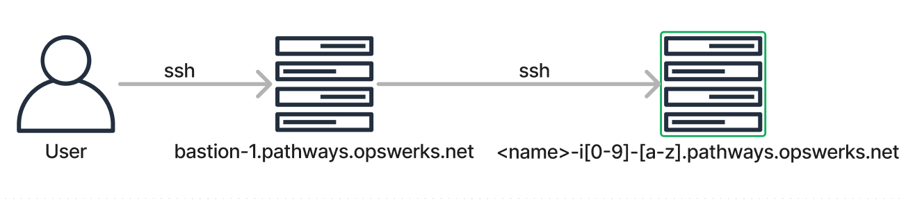

Lab Environment
Before you begin...
Make sure you have an ssh client installed in your computer. For MacOS users, you may use the pre-installed Terminal app. For Windows users, here's a good read on knowing what you can use as your ssh client.
How to access the lab environment
 For this course, you are given an environment running on Rocky Linux 9 which is comparable to CentOS and RedHat Linux.
- Open your ssh client and access the bastion server first. Your login name is the letter of your first name (second name not included) and your lastname (i.e. Mark Jimmy Santos =
msantos):
ssh msantos@bastion-1.pathways.opswerks.net
- It may prompt for accepting the ssh key. Type
yesand hit Enter:
The authenticity of host 'bastion-1.pathways.opswerks.net (66.175.220.174)' can't be established.
ED25519 key fingerprint is SHA256:SRpGqPUe9nD/Z4XtuwTb1/0lbih/bWnvPyE3xEc66oA.
This key is not known by any other names
Are you sure you want to continue connecting (yes/no/[fingerprint])? yes
- Provide your account's password. Your password will be given to you by your instructor:
msantos@bastion-1.pathways.opswerks.net's password:
[msantos@bastion-1 ~]$
- You are now in the bastion host. From the bastion host, access your lab environment via ssh. Use the same username and password:
[msantos@bastion-1 ~]$ ssh msantos@msantos-i1-a.pathways.opswerks.net
msantos@msantos-i1-a.pathways.opswerks.net's password:
Last login: Sun Oct 1 13:42:01 2022 from 66.175.220.174
[msantos@msantos-i1-a ~]$
You are now in your own lab environment. Practical Assessments must be performed in this environment unless stated otherwise. You are not to use the bastion host for doing the practice exercises, but only for accessing the lab environment.